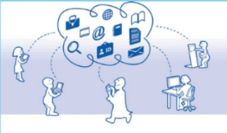

Definición No. 1: Todo el mundo habla de la nube. Pero al final, ¿Qué es la nube? En inglés se le llama Cloud Computing. O tan solo The cloud. Es un nuevo modelo de uso de las computadoras. Lo que normalmente estaría en tu PC (tus programas o tus archivos, etc.) pasa a estar en un conjunto de servidores a los puedes acceder a través de Internet y que forman como tal la nube.
Definición No. 2: La nube o el Cloud Computing, son los términos utilizados para designar a un nuevo modelo de prestación de servicios de negocio y tecnología a través de internet, que permite al usuario acceder a un catálogo de servicios estandarizados y responder a las necesidades de su negocio, de forma flexible y adaptiva, pagando únicamente por el consumo efectuado.
Se puede integrar con mucha mayor facilidad y rapidez. Prestación de servicios a nivel mundial. Prescindir de instalar cualquier tipo de hardware. Casi el único programa que necesitas tener instalado es un navegador de internet.
 Implementación más rápida y con menos riesgos. Actualizaciones automáticas que no afectan negativamente a los recuersos de IT. Puedes hacerlo mediante una PC, una laptop, una tablet, un iPad o un Smartphone.
Inconvenientes en la Nube
- Sin internet no hay nube. La nube depende de la conexión a internet para que funcione. Si no es así, el cliente no podrá acceder a los programas ni a los datos.
- Conflictos de propiedad intelectual u otros. La información de los clientes ya no están en sus manos, con lo que pueden surgir problemas sobre a quién pertenece.
La computación en nube, se sustenta en tres pilares fundamentales de los que Depende intrínsicamente para su correcto funcionamiento: Software, Plataforma e infraestructura. Cada uno de estos pilares cumple un propósito diferente en la nube al sustentar las distintas áreas de productos y servicios de Cloud Computing prestados a corporaciones, empresas y particulares de todo el mundo.